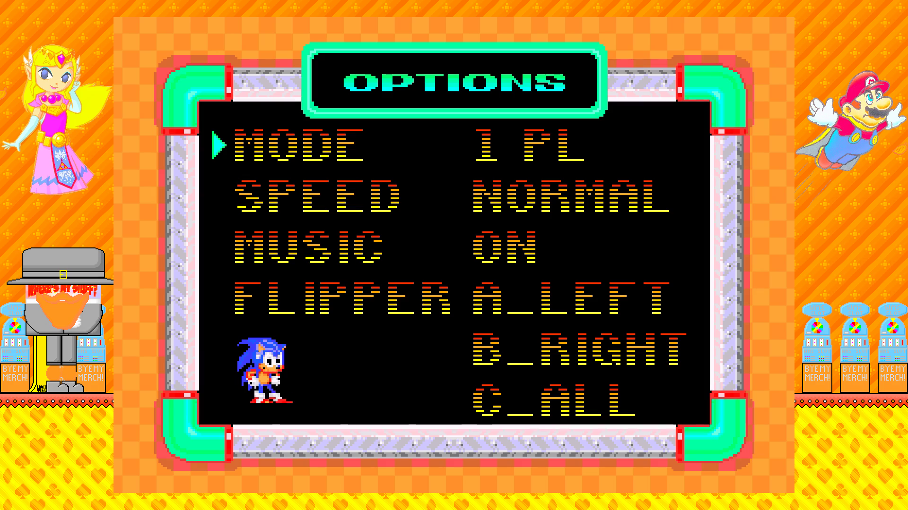

Options "Earrape" Earrape - Sonic (The Hedgehog) Spinball

Free
This is "Options," but I isolated the melody and amplified it to 95dB. Download this FLAC to listen to it anywhere. Included in the download is a TXTP file so the track can loop. (vgmstream is required.)